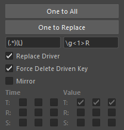

This tool assists in editing set driven keys.
This tool assists in editing set driven keys.
It mainly provides the following functions for set driven keys:
Launch the tool from the dedicated menu or with the following command:
import faketools.tools.drivenkey_tools
faketools.tools.drivenkey_tools.show_ui()
Save set driven keys to a file and reproduce them from the saved file.

To save set driven keys to a file, follow these steps:
Select the node with the set driven keys (multiple selections allowed).
Select Export or Export File from the Export/Import menu.
Export saves to the TEMP folder.Export File allows you to choose the save location.To load set driven keys from a file, follow these steps:
Select Import or Import File from the Export/Import menu.
Import loads from the TEMP folder.Import File allows you to choose the file to load.The set driven keys saved in the file will be reproduced, and the target nodes will be selected.
Copy and paste set driven keys.
There are two methods: One to All and One to Replace.

Copy the set driven keys from one node to multiple nodes.
To copy, follow these steps:
One to All button.Copy the set driven keys from one node to nodes found in the scene with replaced names.
Use the field below the One to Replace button for name replacement (replaced using Python regular expressions).
To copy, follow these steps:
One to Replace button. The nodes with replaced names will be found in the scene and copied.Mirror animation curves.

To mirror, follow these steps:
Time or Value button.
Time button to mirror the animation curves in the time direction.Value button to mirror the animation curves in the value direction.There are several additional functions.